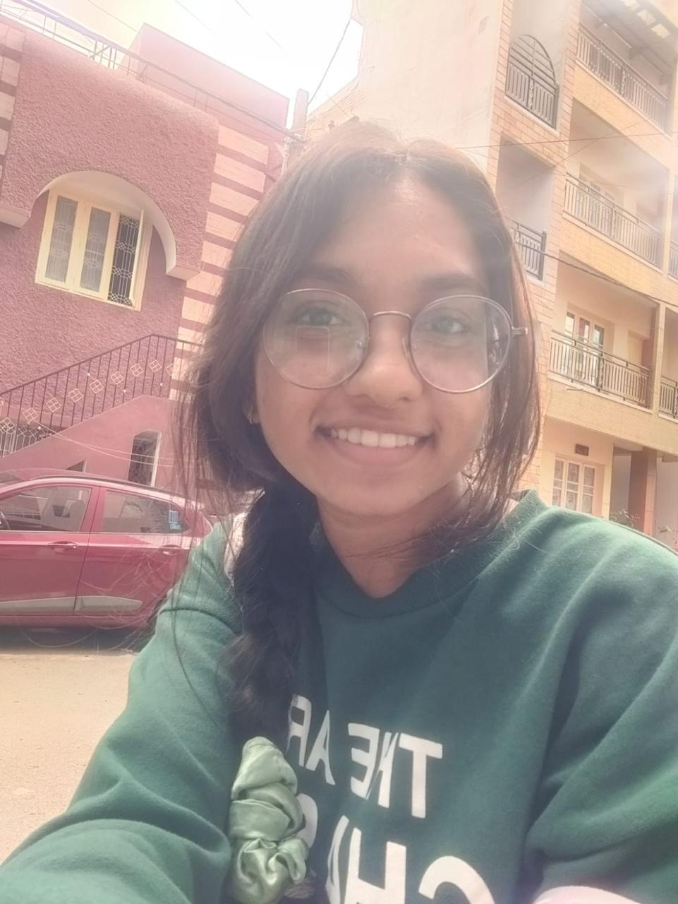

My Dearest Love, 😠â¤ï¸
Although miles apart, my 💖 for you knows no bounds. With every sunrise and sunset, my thoughts are filled with you, my ❤️ beating in rhythm with yours despite the distance that separates us. 🌅🌌
It's hard to express in words the longing I feel to hold you close, to look into your 👀, and to feel the warmth of your embrace. But even in our physical separation, our souls are intertwined, bound by an unbreakable bond that transcends time and space. 💑💫
Every moment spent thinking of you brings a 😊 to my face and a warmth to my heart. Your laughter echoes in my mind, your voice a soothing melody that comforts me in moments of solitude. You are my beacon of light in the darkness, my guiding star in the vast expanse of the night sky. 🌟😊
Though we may be oceans apart, know that you are always with me, woven into the fabric of my being. With each passing day, my 💖 for you grows stronger, fueled by the memories we've shared and the dreams we hold dear. 💖✨
I may not be able to reach out and touch you, but I carry you with me wherever I go, your presence a constant reminder of the 💖 that binds us together. And until the day we are finally reunited, I will hold onto the promise of tomorrow, knowing that our 💖 will conquer all obstacles that stand in our way. 🤝🌈
Distance may test us, but it will never break us. For as long as there is 💖 in our hearts, nothing can keep us apart. ❤️🌏
With all my love,
Karthik Deepu 💖💖💖